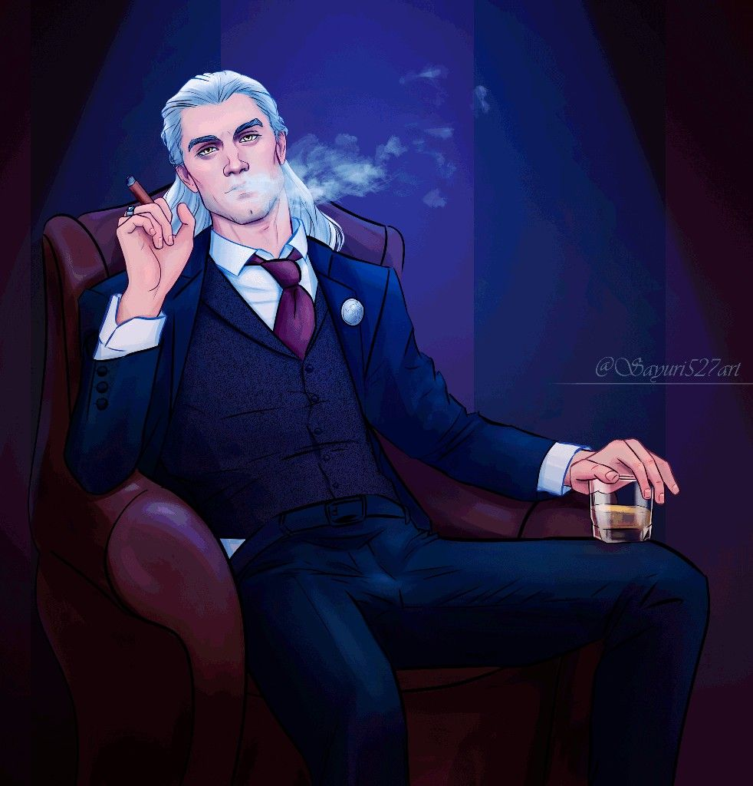

Chapter 3 - The Morgue - Office

See Character Details
As the man lead you into the office of Mr. Giovanni you see who had summoned you. A handsome man in his mid thirties sat behind his desk and was scribbling away at paperwork. However when you stepped inside he looked up with what seemed like an attempt at a warm smile
"Ah, Welcome." His accent was vaugely Itallian. "You must be the newborn my people told me were in the area." However at seeing the confusion on your face at the term he used a worried expression appeared on his face. "You... do know what a Newborn is, don't you?"
At your answer in the negative he chuckled but it was almost... worridly. "I am sorry, my friend... a Newborn is what you are. A newly turned Vampire." He shook his head. "I wondered why a youngling would be so foolish to tresspass in the territory of the Queen of Roses. But you're not foolish... just uninformed."
He sighed and stood up from his desk while giving you an apologetic look. "By our laws you are an illegal creation... and should be destroyed." Before you can say anything he raises a hand. "However. I hate to waste a life but I can't just help you for free. So... I will make you a deal."
"If you deal with a little problem I'm having I will sponsor you in Vampire society. Sound fair?"
He then grimaced. "I'm sorry... I've rushed ahead. I'm sure you have questions. Please... ask."
"My questions..."